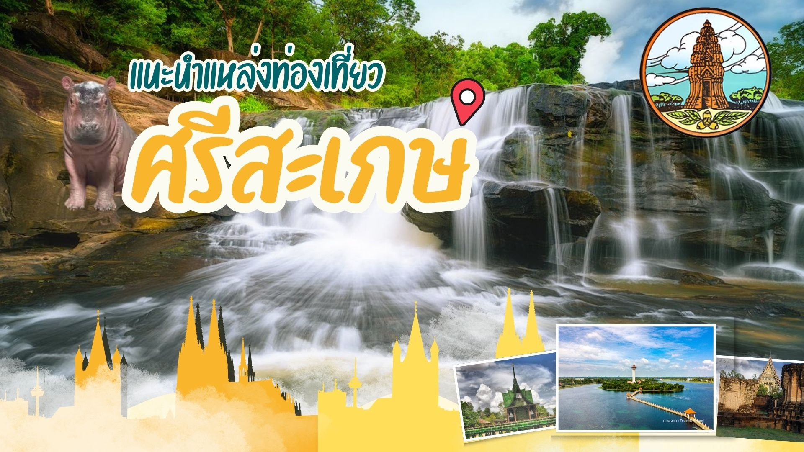

ศรีสะเกษ เมืองอีสานใต้ที่ต้องมาเช็คอิน!

หนึ่งในพิกัดของ อีสาน ที่มีอะไรเยอะกว่าที่คิด!ทั้ง ที่เที่ยวธรรมชาติ
ศิลปวัฒนธรรม
วัดวาอารามสวยๆ ว่าแล้วตามมาดูกันนะว่าไปเที่ยวศรีสะเกษคราวนี้จะไปม่วนหลายๆ ที่ไหนกันได้บ้าง กับ 5
ที่เที่ยวศรีสะเกษ
ไปเที่ยวกันโลด!!!